În stînga este slide-ul din curs, în dreapta aceeași figură sau același tabel, calculat în browser din aceleași date. Butonul ▶ modifică parametrul pas cu pas; casetele „Exemplu rezolvat” refac calculul cu cifrele capitolului.
Ideea de cointegrare · Metoda Engle–Granger în doi pași · Modele cu corecția erorii · Modelul VECM și teorema de reprezentare a lui Granger · Testele Johansen · Estimarea și interpretarea lui β și α · Prognoza cu VECM și cu VAR în diferențe · Exemple economice: paritate și rate ale dobînzii · O aplicație: pairs trading
Ideea de cointegrare
Femeia beată și cîinele ei prin simulare
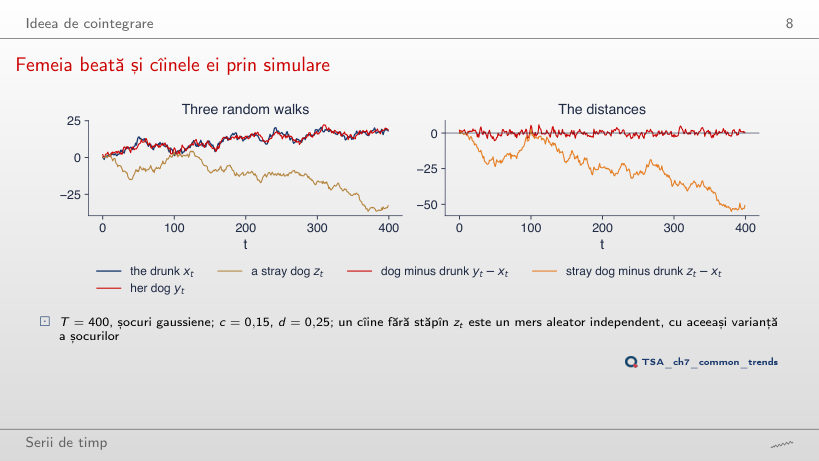
Răspuns
0,261: rădăcina unitară nu se mai respinge. Fără corecție, y − x este diferența a două mersuri aleatoare independente, deci tot un mers aleator; abaterea standard a distanței crește de la 1,86 la 7,07. Cu c = 0,15 și d = 0,25, ρ = 0,6 și p < 0,001: corecția erorii, nu faptul că ambele serii pornesc din același loc, ține distanța mărginită.
Trenduri stochastice comune
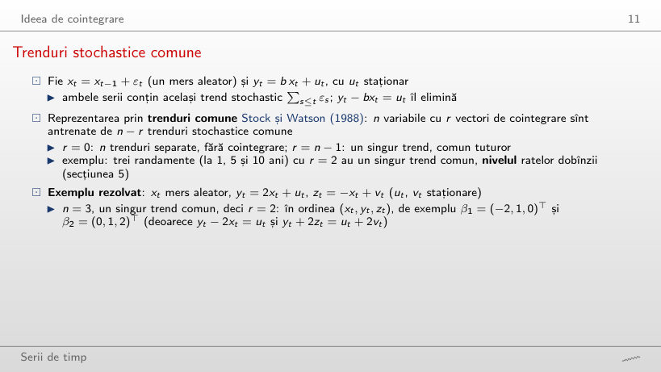
Exemplu rezolvat
Răspuns
β₂ = (0, 1, 1)ᵀ: yt + zt = ut + vt, fără trend. Vectorul depinde de coeficienți: în general β₂ = (0, 1, −a/c)ᵀ, deci (0, 1, 2)ᵀ pentru a = 2 și c = −1. Rangul rămîne 2, pentru că trei serii au tot un singur trend comun.
Patru perechi de serii cu trend
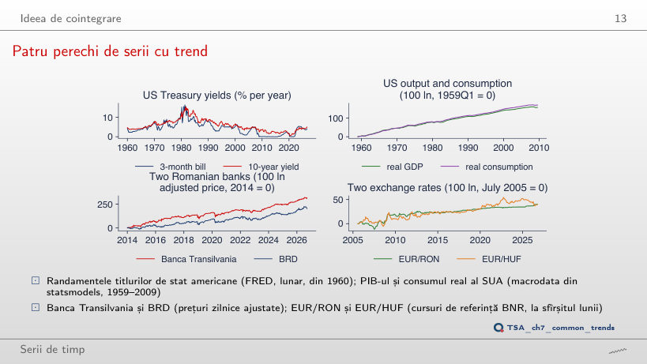
Răspuns
Nu: τ = −1,95, p = 0,553 pe ultimele 102 trimestre, față de τ = −3,54, p = 0,029 pe 203. Cu jumătate din date și abateri de durata unor ani, testul are puțină putere; p mare înseamnă că relația nu se separă de zgomot pe acest eșantion, nu că nu există. Pentru bănci testul rămîne sub 5% (p = 0,044).
Metoda Engle–Granger în doi pași
Distribuția în ipoteza nulă prin simulare
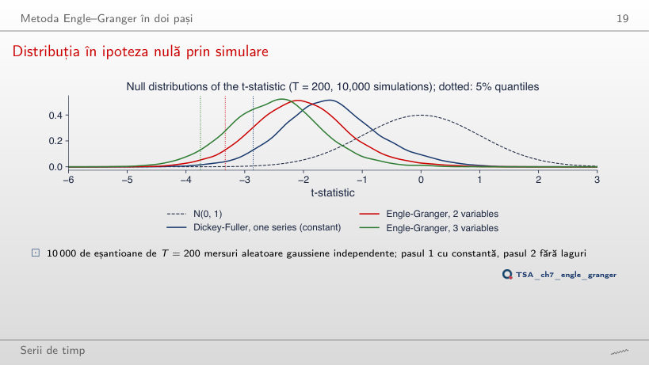
Răspuns
14,2%, aproape ca la T = 200 (14,5%), și 30,0% cu 3 variabile. Distorsiunea vine din faptul că OLS alege b̂ pentru a face reziduurile cît mai mici, nu din lungimea eșantionului; la T = 50 valoarea critică corectă pentru 2 variabile este −3,46 (cuantila simulată −3,41), față de −2,92 în tabelul Dickey–Fuller.
Valorile critice ale testului Engle–Granger
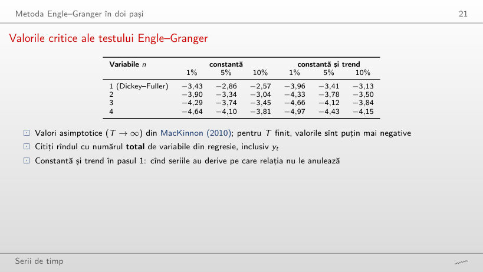
Răspuns
−3,46, față de −3,34 asimptotic și −3,37 la T = 200. La eșantioane mici distribuția statisticii este mai deplasată spre stînga, deci valorile critice sînt mai negative; tabelul Dickey–Fuller (−2,92 la T = 50) ar fi și mai departe de cea corectă.
Exemplu rezolvat: consumul și venitul în SUA
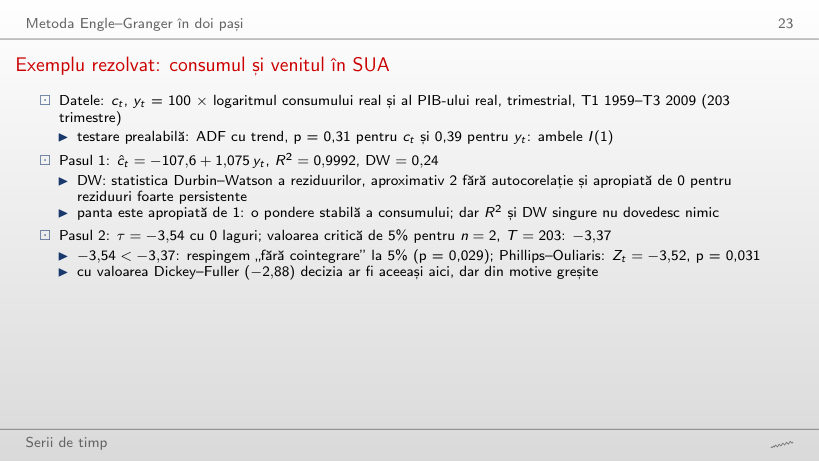
Exemplu rezolvat
Răspuns
Nu: τ = −3,00 față de valoarea critică Engle–Granger −3,39 (p = 0,111), pe 108 trimestre. Cu valoarea Dickey–Fuller (−2,89) s-ar respinge, greșit. R² rămîne peste 0,99 și panta 1,072, dar nici R² mare, nici o pantă apropiată de 1 nu dovedesc cointegrarea.
Reziduurile din pasul 1
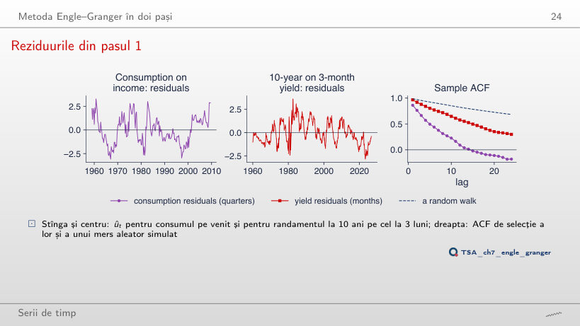
Răspuns
Nu: crește de la 0,31 la 0,46, iar pentru randamente ρ̂(12) crește de la 0,58 la 0,62. În a doua jumătate a eșantioanelor abaterile de la relația pe termen lung durează mai mult; persistența reziduurilor depinde de perioada aleasă, de aceea decizia o dă testul, nu forma ACF.
Engle–Granger și Phillips–Ouliaris pe date reale
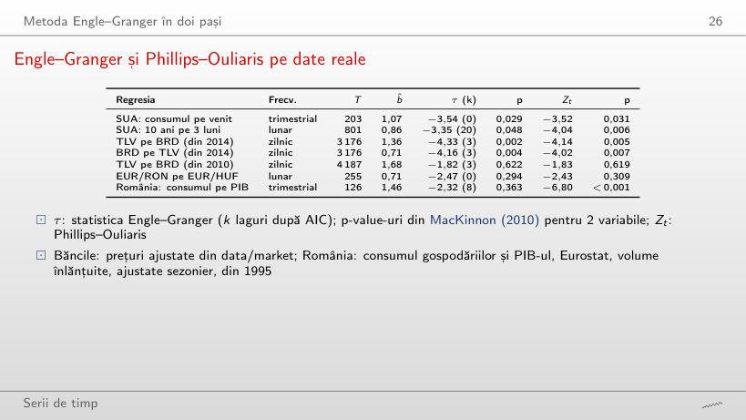
Exemplu rezolvat
Răspuns
Nu: τ = −3,98, p = 0,008 (Phillips–Ouliaris p = 0,001), față de p = 0,622 pe tot eșantionul din 2010. Fără anii 2010–2014 relația dintre cele două bănci apare; aceeași pereche dă verdicte opuse după data de început, de aceea alegerea eșantionului după ce ați văzut datele este data snooping.
Modele cu corecția erorii
Viteza de ajustare și timpul de înjumătățire
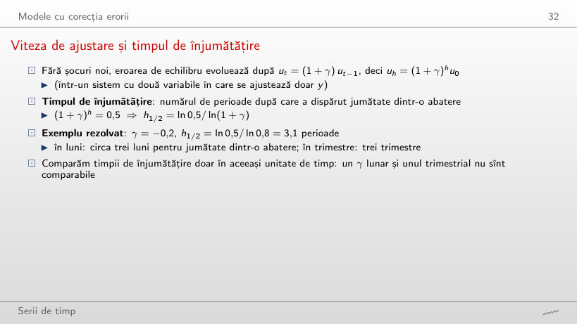
Exemplu rezolvat
Răspuns
O perioadă: ln 0,5/ln 0,5 = 1. Jumătate din abatere dispare la fiecare pas, deci după o perioadă rămîne exact jumătate. Regula 1/|γ| = 2 ar presupune o ajustare liniară, nu geometrică.
Timpi de înjumătățire: teorie și estimări
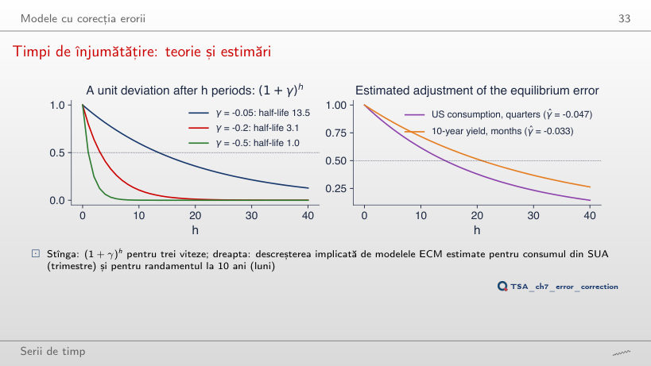
Răspuns
27 de trimestre: γ̂ = −0,025, cu t = −0,66, față de 14,3 trimestre și t = −1,75 pînă în 2009. Pe 1959–1990 termenul de corecție nu se separă de zgomot, iar un γ̂ mic în modul dă un timp de înjumătățire lung și imprecis. Pentru randamentul la 10 ani, pînă în 1990: γ̂ = −0,048 (t = −4,58), 13,9 luni.
Exemplu rezolvat: un trimestru de consum
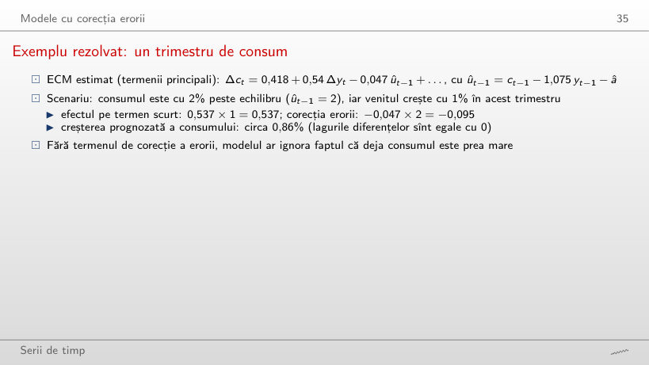
Exemplu rezolvat
Răspuns
1,05%: 0,418 + 0,537 × 1 + (−0,047) × (−2) = 0,418 + 0,537 + 0,095. Cînd consumul este sub echilibru, termenul de corecție îl împinge în sus, cu aceeași mărime cu care îl frîna în exemplul din curs (0,86%).
Modelul VECM și teorema de reprezentare a lui Granger
Exemplu rezolvat: un VECM cu două variabile
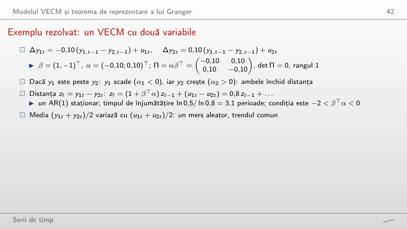
Exemplu rezolvat
Răspuns
Nu: 1 + βᵀα = 1 + α₁ − α₂ = 1 − 0,1 + 0,1 = 1, deci zt = zt−1 + u₁t − u₂t este un mers aleator. Ambele variabile scad cînd y₁ > y₂, cu aceeași viteză, deci decalajul nu se închide: contează βᵀα, nu semnul fiecărui α.
Testele Johansen
Exemplu rezolvat: de la valori proprii la statistici
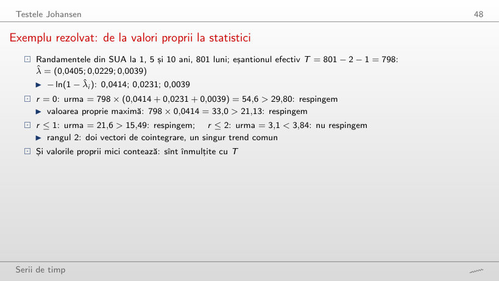
Exemplu rezolvat
Răspuns
Rangul 1: λtrace(0) = 45,5 > 29,80, dar λtrace(1) = 14,5 < 15,49, pe T = 609. Pe 1960–2026 rangul este 2. Cu mai puține observații a doua relație, foarte persistentă, nu se mai separă de o rădăcină unitară; rangul ales de test depinde și de puterea lui, nu doar de structura datelor.
Testele Johansen pe trei sisteme
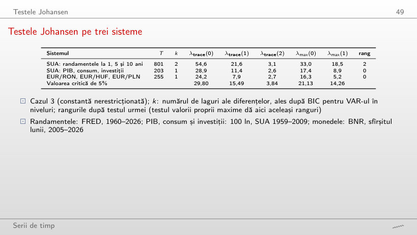
Răspuns
Rangul 1: λtrace(0) = 37,5 > 29,80, iar λtrace(1) = 15,3 < 15,49, față de rangul 0 cu k = 1 (28,9, un rezultat la limită). Numărul de laguri schimbă verdictul; pentru cele trei monede rangul rămîne 0 (28,1).
Sensibilitatea testelor Johansen la termenii determiniști
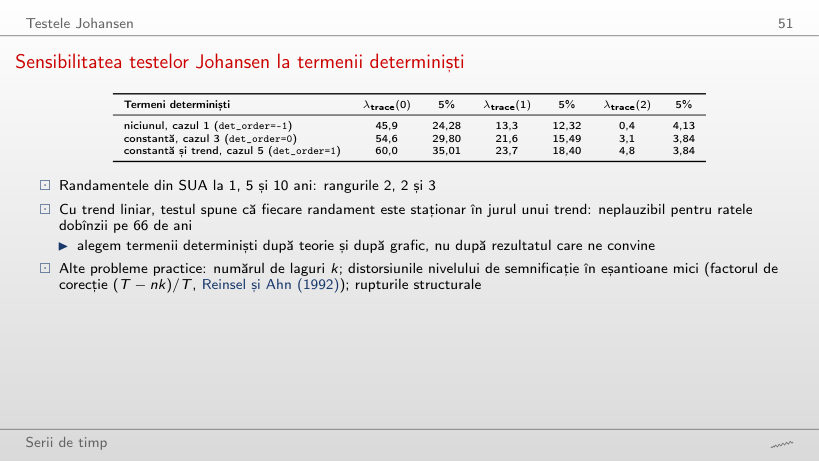
Răspuns
Rangul 1: λtrace = 41,4, apoi 11,1 < 18,40, față de rangul 3 pe 1960–2026. Pe tot eșantionul trendul liniar absoarbe scăderea randamentelor după 1981, iar testul ajunge să declare fiecare randament staționar în jurul unui trend; pe eșantionul de după 1990 toate cele trei cazuri dau rangul 1.
Estimarea și interpretarea lui β și α
Modelul VECM al structurii la termen
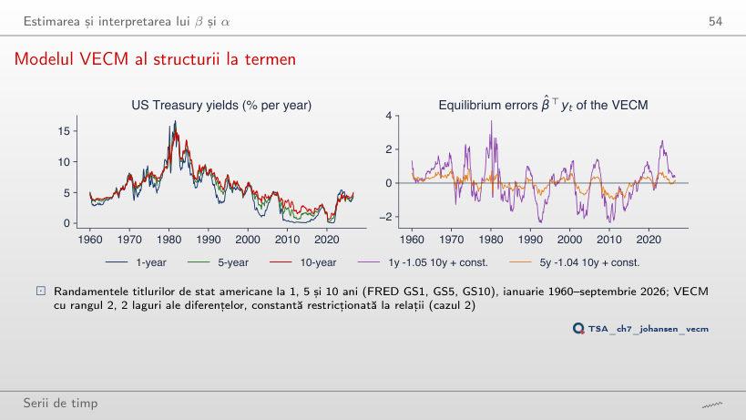
Răspuns
−0,954, față de −1,046 pe 1960–2026; în a doua relație −0,988 față de −1,045. Ambele rămîn aproape de −1, deci echilibrele sînt tot aproape spread-urile i⁽¹⁾ − i⁽¹⁰⁾ și i⁽⁵⁾ − i⁽¹⁰⁾. Cu β̂ super-consistent, o diferență de 0,09 pe 40 de ani de date este o schimbare reală a eșantionului, nu doar zgomot de estimare.
Coeficienții de ajustare
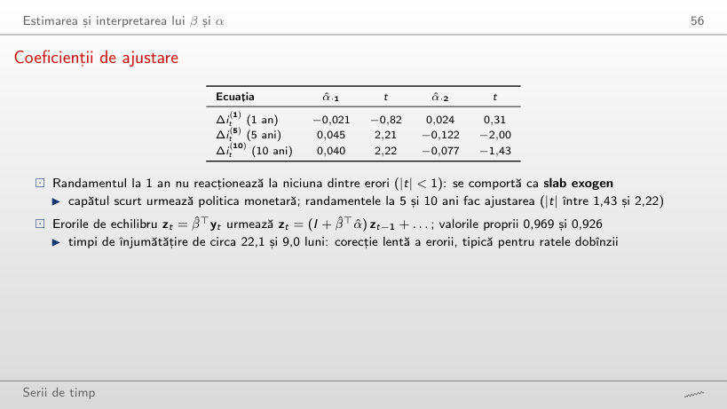
Exemplu rezolvat
Răspuns
Nu: t = 2,10 și −3,10 pentru cele două erori de echilibru, față de −0,82 și 0,31 pe 1960–2026. Înainte de 2001 și randamentul scurt reacționa la abaterile de la echilibru; exogenitatea slabă a capătului scurt apare pe eșantionul care include politica monetară cu dobînzi aproape de zero.
Funcțiile de răspuns la impuls ale modelului VECM
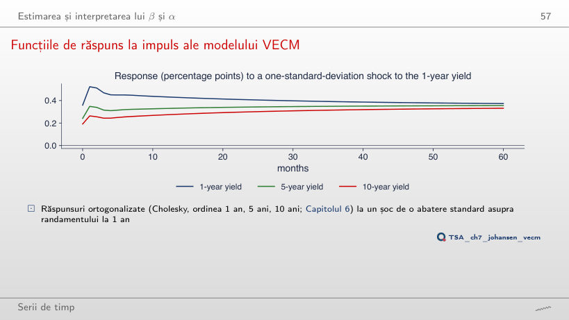
Răspuns
Nu: +0,30, +0,30 și +0,29 puncte procentuale pentru 1, 5 și 10 ani (la impact 0,41, 0,27, 0,21). Cu un singur trend comun, șocul mută nivelul tuturor randamentelor permanent, iar răspunsurile devin aproape egale pentru că spread-urile revin la medie; aceeași formă apare și pe 1960–2026 (0,37, 0,36, 0,33).
Prognoza cu VECM și cu VAR în diferențe
VECM față de un VAR în diferențe, în afara eșantionului
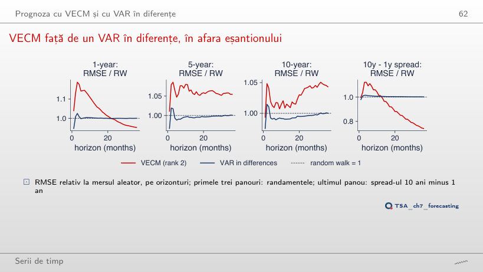
Răspuns
Da: RMSE relativ 0,83 (75 de origini), față de 0,74 de la 1990, iar VAR-ul în diferențe rămîne la 1,00. Pentru nivelul randamentului la 1 an, VECM-ul nu bate mersul aleator (1,05 la 36 de luni). Cointegrarea ajută la prognoza relației, nu a trendului comun.
Exemple economice: paritate și rate ale dobînzii
PPP pentru leu
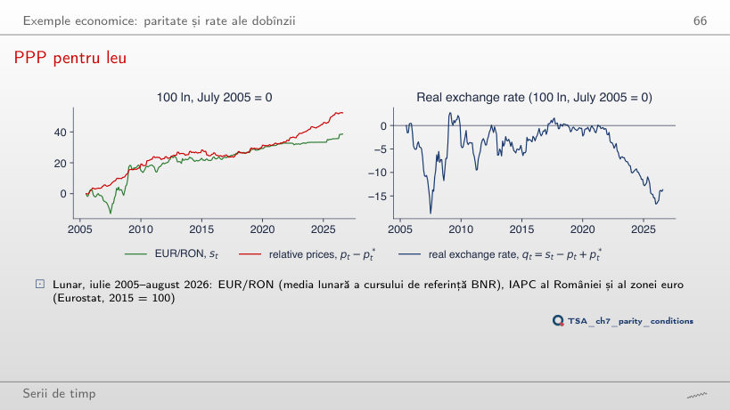
Răspuns
Nu: p = 0,924 (cu trend 0,957), mai departe de respingere decît pe 2005–2026 (0,24). După 2010 leul s-a depreciat cu 23,7 puncte logaritmice, iar prețurile relative au crescut cu 33,1: cursul real a continuat să scadă. Un eșantion mai scurt nu poate arăta ajustări cu timpi de înjumătățire de cîțiva ani.
ROBOR și Euribor
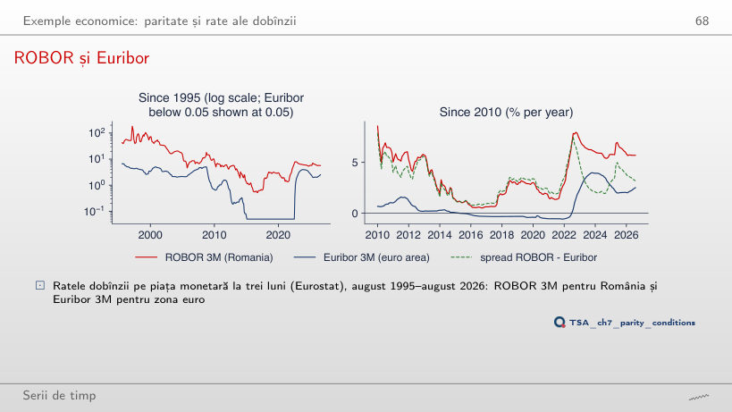
Răspuns
Nu: τ = −3,24, p = 0,063, iar Phillips–Ouliaris dă p = 0,338, față de 0,047 și 0,029 de la 2010. În plus, γ̂ din ECM-ul pentru ROBOR devine pozitiv (0,011): după 2015 ROBOR nu se mai întoarce spre relația cu Euribor. Cu o politică monetară proprie, legătura dintre cele două dobînzi depinde mult de perioada aleasă.
Trei monede central-europene
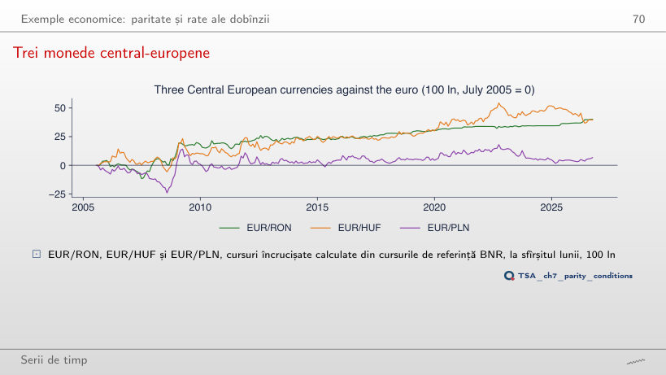
Răspuns
11,1, față de valoarea critică 29,80: rangul rămîne 0, ca de la 2005 (24,2) și de la 2012 (12,7). Pe un eșantion mai scurt testul are și mai puțină putere, iar ADF nu respinge rădăcina unitară pentru niciun curs (p = 0,958; 0,626; 0,335). Nicio perioadă nu arată un trend comun al celor trei monede.
O aplicație: pairs trading
Banca Transilvania și BRD
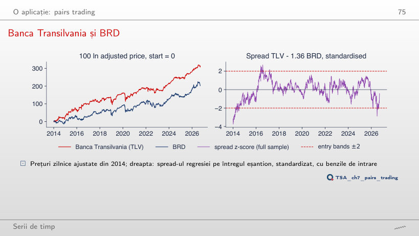
Răspuns
Circa 444 de zile de tranzacționare, cu ρ̂ = 0,998 și b̂ = 1,68, față de 69 de zile din 2014. Pe 2010–2026 testul Engle–Granger nu respinge „fără cointegrare” (p = 0,622): spread-ul se comportă aproape ca un mers aleator, iar o poziție deschisă ar putea aștepta ani. Rezultatul favorabil din 2014 depinde de data de început aleasă.
Pairs trading în afara eșantionului
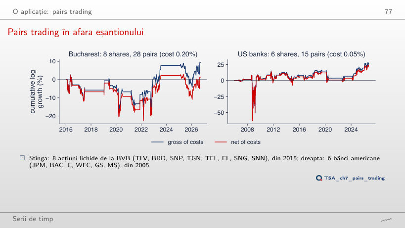
Răspuns
−0,35% pe an (Sharpe −0,05), față de 0,41% cu costurile din curs; brut rămîne 1,17%. Costul de echilibru este 0,31%, deci orice cost mai mare face strategia neprofitabilă. La băncile americane, cu un cost de 0,10%, randamentul net scade doar de la 2,57% la 2,37%.
Randamentele titlurilor de stat americane GS1, GS5, GS10 și TB3MS (FRED, lunar, ianuarie 1960 – septembrie 2026), cursurile EUR/RON, EUR/HUF și EUR/PLN (BNR, sfîrșit de lună, iulie 2005 – septembrie 2026), media lunară EUR/RON și IAPC (Eurostat, iulie 2005 – august 2026), ROBOR 3M și Euribor 3M (Eurostat, august 1995 – august 2026), consumul gospodăriilor și PIB-ul României (Eurostat, T1 1995 – T2 2026, versiunea din curs, citită de pe linia graficului din seminar, fără puncte omise). Randamentele, cursurile BNR, IAPC, ROBOR și Euribor sînt citite cu funcțiile capitolului (FRED, BNR, Eurostat, descărcate pe 4 noiembrie 2026) și tăiate la datele de sfîrșit ale slide-urilor; reproduc exact cifrele din curs. Consumul, venitul și investițiile SUA: macrodata din statsmodels (T1 1959 – T3 2009). Prețurile ajustate ale acțiunilor: data/market. Testele Engle–Granger, ADF și Johansen se recalculează în browser; statisticile Phillips–Ouliaris, modelele VECM, prognozele în afara eșantionului și testele istorice pairs trading sînt cele ale codului capitolului. Simulările folosesc extragerile seminței capitolului. Variantele care nu apar în curs (alt eșantion, alt număr de laguri, alte praguri, alte costuri, alți parametri ai simulărilor) sînt rulări suplimentare ale codului capitolului, cu aceleași date și aceeași sămînță.